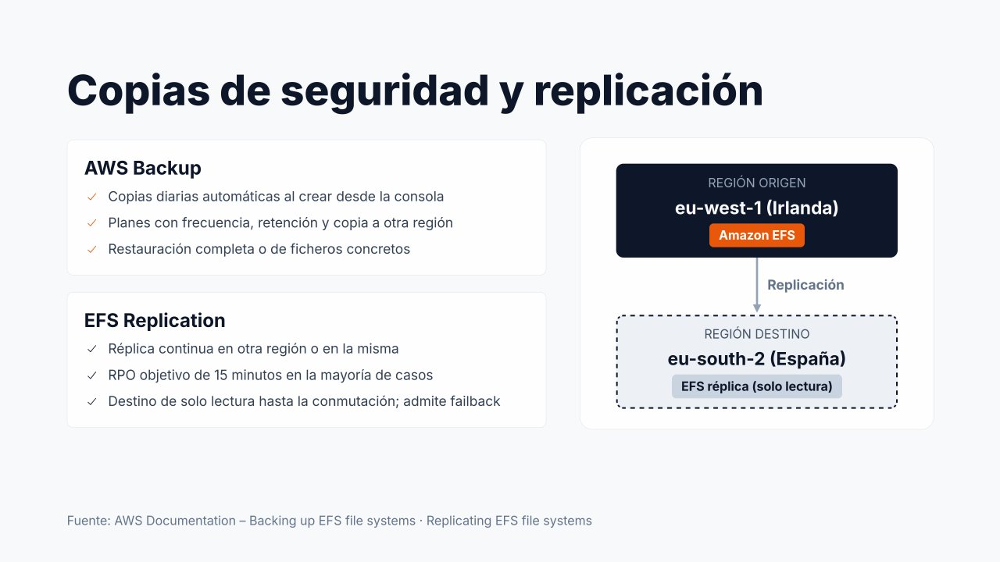

Copias de seguridad y replicación de EFS¶

La alta durabilidad de EFS (once nueves) protege frente a la pérdida de hardware, pero no frente a un usuario que borra un directorio, una aplicación que corrompe ficheros o un incidente que afecta a toda la región. Para proteger los datos se dispone de dos mecanismos complementarios: AWS Backup y EFS Replication.
AWS Backup¶
AWS Backup es el servicio centralizado de copias de seguridad de AWS. Gestiona con las mismas herramientas las copias de EFS, EBS, RDS, DynamoDB y otros servicios.
Copias automáticas¶
Al crear un sistema de archivos desde la consola, las copias automáticas están activadas por defecto: AWS Backup aplica un plan predeterminado con una copia diaria y retención de 35 días, guardada en el almacén aws/efs/automatic-backup-vault.
- EFS → Sistemas de archivos, seleccionar el sistema.
- En la sección General, el campo Copias de seguridad automáticas indica si están Habilitadas.
- Para cambiarlo: Editar, marcar o desmarcar Habilitar las copias de seguridad automáticas y Guardar cambios.
Si se necesita otra frecuencia, otra retención o copiar las copias a otra región, se crean planes de copia propios en AWS Backup (ver Copias de seguridad y recuperación).
Restauración¶
A partir de un punto de recuperación puede restaurarse:
| Tipo | Destino | Uso |
|---|---|---|
| Restauración completa | Un sistema de archivos nuevo, o el mismo sistema de archivos | Pérdida grave, clonación de un entorno |
| Restauración parcial | Solo determinados ficheros o directorios (hasta un número limitado de rutas) | Un usuario borró una carpeta |
Cuando se restaura sobre el mismo sistema de archivos, los datos no sobrescriben el contenido actual: se recuperan en un directorio nuevo llamado aws-backup-restore_<fecha> en la raíz, desde el que el administrador copia lo que necesite.
Localizar las copias
- AWS Backup → Recursos protegidos, seleccionar el sistema de archivos
fs-0abc123. - La lista Puntos de recuperación muestra cada copia con su fecha, estado y almacén.
Restaurar
- Seleccionar el punto de recuperación y pulsar Restaurar.
- Tipo de restauración: Restaurar todo el sistema de archivos o Restaurar elementos específicos (indicando las rutas, por ejemplo
/web/uploads/2026). - Destino: Restaurar en un nuevo sistema de archivos (con su tipo, cifrado y rendimiento) o Restaurar en el sistema de archivos de origen (en el directorio
aws-backup-restore_<fecha>). - Rol de restauración: el rol predeterminado o
LabRole. - Restaurar copia de seguridad. El progreso se sigue en AWS Backup → Trabajos → Trabajos de restauración.
# Listar los puntos de recuperación del sistema de archivos
aws backup list-recovery-points-by-resource \
--resource-arn arn:aws:elasticfilesystem:us-east-1:111122223333:file-system/fs-0abc123
# Restauración parcial de una ruta sobre el sistema de origen
aws backup start-restore-job \
--recovery-point-arn <arn-punto-recuperacion> \
--iam-role-arn arn:aws:iam::111122223333:role/LabRole \
--resource-type EFS \
--metadata '{"file-system-id":"fs-0abc123","newFileSystem":"false","Encrypted":"true","ItemsToRestore":"[\"/web/uploads/2026\"]"}'
aws backup list-restore-jobs --by-resource-type EFS
EFS Replication¶
EFS Replication mantiene una réplica del sistema de archivos en otra región o en la misma región (también en otra cuenta).
| Característica | Detalle |
|---|---|
| Funcionamiento | Replicación continua y automática, sin servidores ni scripts |
| RPO objetivo | 15 minutos para la mayoría de los sistemas de archivos |
| Destino | Un sistema de archivos nuevo creado por la replicación, o uno existente |
| Estado del destino | Solo lectura mientras la replicación está activa |
| Configuración del destino | Puede ser Regional u One Zone, con su propia clave KMS y política de ciclo de vida |
| Métrica | TimeSinceLastSync: tiempo desde la última sincronización completada |
En el diagrama, un sistema de archivos productivo en Irlanda (eu-west-1) se replica en España (eu-south-2).
- En la región de origen, EFS → Sistemas de archivos, seleccionar el sistema y abrir la pestaña Replicación.
- Crear replicación.
- Configuración de destino: Nuevo sistema de archivos (o un sistema existente), Región de destino
eu-south-2, tipo Regional u One Zone y clave de KMS de la región de destino. - Crear replicación. La pestaña muestra el sistema de destino, su estado y la Hora de la última sincronización.
Si la región de origen sufre una incidencia, se elimina la configuración de replicación: el sistema de destino pasa a admitir escritura y se convierte en el nuevo principal (failover). Resuelta la incidencia, se replica en sentido inverso para volver a la región original (failback). El procedimiento completo está en el apartado «Para saber más» de Copias de seguridad y recuperación.
Copias frente a replicación¶
Es importante distinguir el propósito de cada mecanismo:
| Aspecto | AWS Backup | EFS Replication |
|---|---|---|
| Protege frente a | Errores humanos, borrados, corrupción, ransomware | Pérdida de la región (o de la AZ en One Zone) |
| Versiones del pasado | Sí: un punto de recuperación por cada copia | No: la réplica es el estado actual |
| Borrados accidentales | Se recuperan de una copia anterior | Se replican también al destino |
| RPO | El intervalo entre copias (horas) | Minutos (objetivo 15 min) |
| RTO | Lo que tarde la restauración (crece con el volumen de datos) | Bajo: el destino ya está listo para montarse |
| Coste | Almacenamiento de las copias | Un segundo sistema de archivos completo + transferencia entre regiones |
La replicación protege frente a la pérdida de una región, pero no frente a errores humanos: si un usuario borra un fichero, el borrado se replica. Las copias de AWS Backup conservan versiones del pasado. Por este motivo, en una arquitectura empresarial lo habitual es combinar ambos.
Referencias¶
- AWS. Backing up EFS file systems — Copias de seguridad
- AWS. Restoring an Amazon EFS file system — Restauración con AWS Backup
- AWS. Replicating EFS file systems — Replicación
- AWS. Failing over and failing back — Conmutación y vuelta
- AWS. Replication overwrite protection — Protección contra sobrescritura